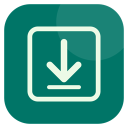

NO. 01SHOOT ASSISTANT
AN INDEPENDENT COLLECTION / BY AZU
秘密武器
SECRET WEAPONS
阿祖
制造
制造
NO. 02

CLIP HARBOR拍摄创作Mac 本机版
拾片 · 视频素材下载器
整理视频链接、下载素材、截取片段，也能对本地视频进行选区修补和音频分离。
本机版本 · 安装包暂未上架
NO. 03A LITTLE MEMORY
NO. 04SHOT LIBRARY
NO. 05QUICK MARKDOWN
NO. 06SCREEN CHINESE ASSISTANT
换个词，再找找。
这件武器，还没造出来。
A NOTE FROM THE MAKER